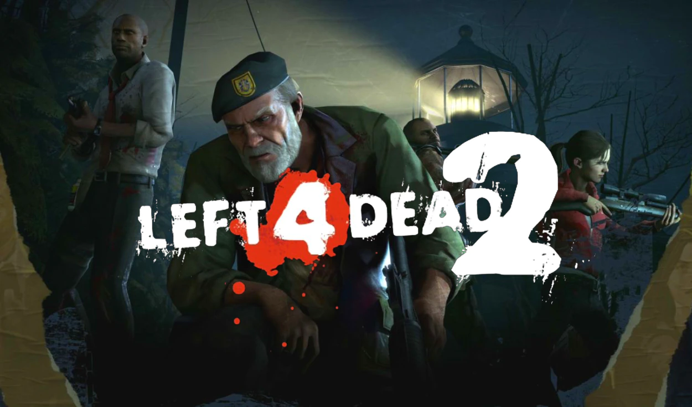
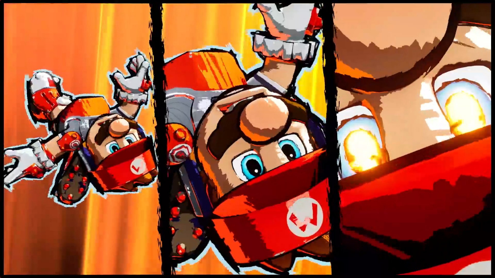

League of Legends aumentará la dificultad de sus 'teamfights'
La versión 12.10 trastocará el ritmo habitual de las partidas debido
a una mayor durabilidad en los campeones. Se aumentará la vida
básica de los campeones, así como algunas estadísticas que se
consiguen al subir nivel

Left 4 Dead y la historia de su origen, ¿y si el shooter hubiera
renunciado a tener zombis?
Por suerte, el guionista tuvo una idea para darle empaque a la propuesta. "Pensé, ¿por qué no tomamos a los personajes y el mundo, y hacemos que algunos de ellos se den cuenta de que están esencialmente en una película de zombis? Zoe y Lewis entienden que, como 'Dios mío, esto parece de película', pero lo toman en serio".

Mario Strikers: Battle League Football vuelve a la carga con un vídeo introductorio lleno de acción